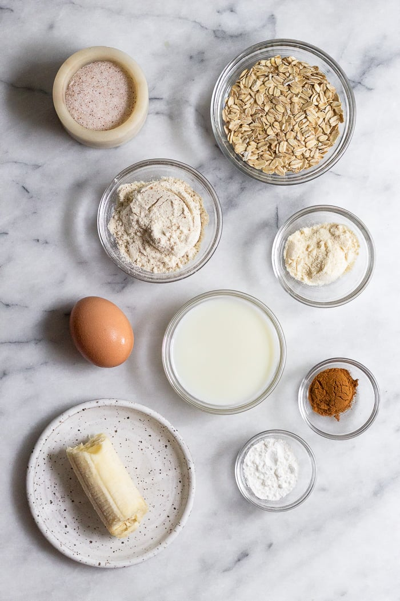

Protein Powder: whey or plant-based works for this protein pancake recipe!
Banana:you can’t taste any banana flavor though
Egg
Milk: 1 cup
coconut flour
baking powder
salt
cinnamon
oil or butter/ghee: for cooking
Protein pancakes

So how to make pancakes?
Blend your oats: Add rolled oats to your blender and blend for 10-15 seconds or so until it is broken down into a flour consistency.
Combine your dry ingredients: Add processed oats, protein powder, coconut flour, baking powder, cinnamon, and salt in a small bowl and mix well to combine.
Mix your wet ingredients: In a separate medium bowl, mash your bananas until smooth. Add your egg, and milk and mix well to combine. Add your dry ingredients to your wet and mix until combined. Try not to overmix. The batter should be pretty thick. Let the mixture sit for 5 minutes.
Cook: Heat up a large nonstick skillet or griddle over low to medium heat. Once hot, add cooking fat and let it warm up. Using a 1/4 cup as a scoop, form into equal size pancakes. I get about 5 (you may need to cook in batches depending on how big your pan is). Cook for 3-4 minutes until bubbles start to form on the outside. Flip and cook for another 1-2 minutes until golden brown.
.jpeg)
.jpeg)
.jpeg)